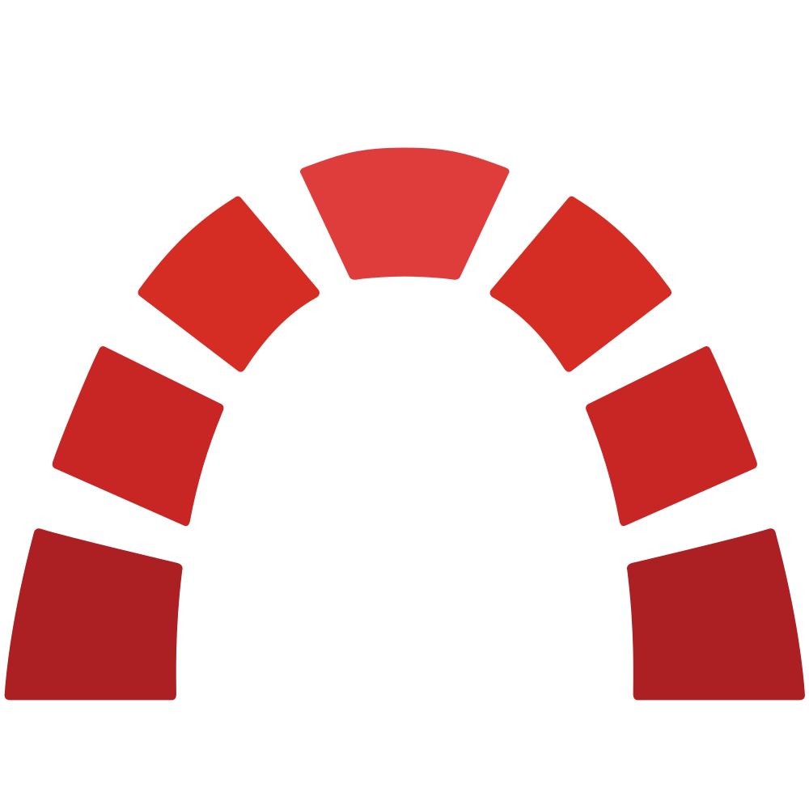

Timer por sessão
Cada início cria uma sessão nova. Pause, retome ou encerre sem perder o histórico real do trabalho.
08:45+ 01:15= 02:00

Geja Time TrackerCronometre sessões independentes, organize seus chamados e lance horas no Redmine com segurança — direto no navegador.
Uma extensão compacta para transformar o acompanhamento de horas em uma parte natural do seu dia.
Cada início cria uma sessão nova. Pause, retome ou encerre sem perder o histórico real do trabalho.
Pesquise, filtre e agrupe chamados por projeto, versão, status ou prioridade.
Revise duração, atividade, data e comentário antes de enviar qualquer apontamento.
Veja hoje, semana e mês separando horas confirmadas das sessões ainda pendentes.
Organize seus chamados em colunas locais sem alterar o status original no Redmine.
Use o popup, Side Panel, janela auxiliar ou widget direto na página do chamado.
O Geja acompanha a forma como você trabalha, sem impor um processo novo e sem alterar seus chamados.
Encontre uma tarefa atribuída a você ou abra um chamado diretamente no Redmine.
O contador começa em zero e o estado se mantém sincronizado entre abas e janelas.
Ao parar, a sessão fica pendente para você revisar e enviar quando estiver pronto.
O tempo local não é misturado com o que já foi confirmado no Redmine. Você sempre sabe o que está pendente.
Princípio do Geja Time TrackerA extensão conversa diretamente com a instância Redmine configurada. Não existe backend próprio, telemetria ou serviço intermediário recebendo sua API Key.
Leia a política técnica →Instale a extensão, conecte sua instância Redmine e tenha seus chamados sempre à mão.
Adicione ao ChromeA instalação leva poucos segundos.
Configure o RedmineInforme URL e API Key da sua conta.
Comece a trabalharEscolha um chamado e inicie sua primeira sessão.
Landing pública, instalação guiada, links oficiais e documentação revisada.
Cadastro de chamados, seções por projeto e descrições formatadas do Redmine.